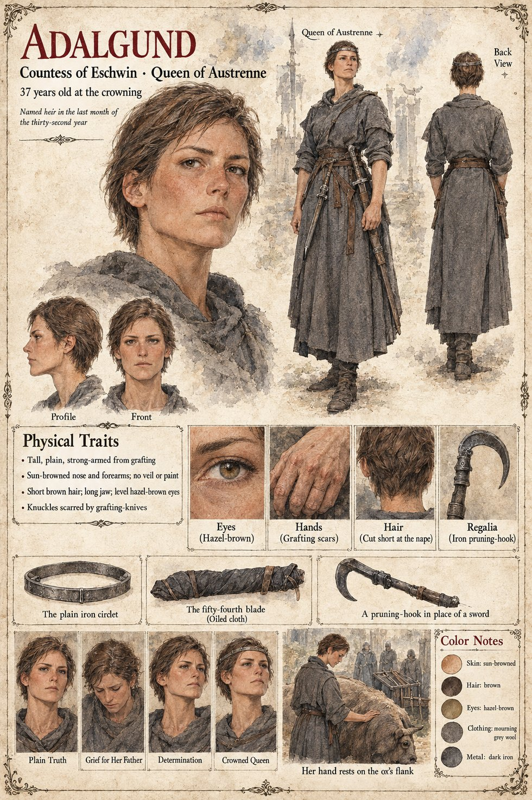
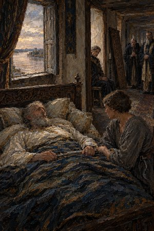
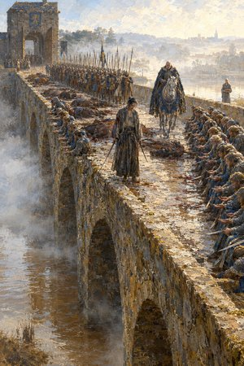

Adalgund
Countess of Eschwin, later Queen of Austrenne · daughter of King Theudebald · 37 years old at the crowning
The daughter of King Theudebald, Countess of Eschwin, the county of the south bank where, on Brun's page, the vines come down to the river, and after her father's death Queen of Austrenne. In the succession war she is the claimant against the Duke of Tarnwald, and she is crowned on the cathedral steps (Chapter 17). Her sheet draws a tall, plain, strong-armed woman, sun-browned at the nose and forearms, with no veil or paint, short brown hair cut at the nape, a long jaw, level hazel-brown eyes and knuckles scarred by grafting-knives. Its line, Named heir in the last month of the thirty-second year, is Theudebald's own date: in the last month of the thirty-second year he names her heir with a masculine pronoun that in the Latin of the old law stands for either, and the licence for the Low Forge's swords is granted in advance to her, at a hundred and forty marks a blade under the heading Repairs to the Eschwin Bridge.
At the King's last interview she is alone with him and a boy holding a basin (Boy with the Basin); it is reported that he asked whether she wanted it and that she said she did not. After his death she tells the Chancellor Ricbert that she will swear her case on a sword at the Ordeal and let the Law decide it, and when he says that he has no form of words by which one knight might be two she answers Then count him twice, Chancellor. She asks the ox Brun's name, lays a bare hand flat on his flank for longer than courtesy requires, and later tells him that she does not want it; Hiltrude's answer is that nobody who wanted it would have asked his name. As Queen she gives Wolfram the office of Keeper of the Floor, takes the ox into her pension and stands with her scarred hand on his flank when he dies. Her sheet's closing scene, Her hand rests on the ox's flank, draws it: a woman in mourning grey with her palm on a great dun beast and armoured men standing behind her. Her old aunt comes up from the south to scold her and fails to persuade her to take off the pruning-hook before the Ordeal (Eschwin Aunt, whose sheet draws the woman she scolds as fair, young and in blue, not as this one; the page reports both), her steward is Aldemar, and Ebbo of Eschwin, her father's marshal on the south bank for twenty years, is her champion at the Ordeal.
The sheet also draws the regalia, a plain iron circlet and an iron pruning-hook, the second captioned A pruning-hook in place of a sword, and a blade wrapped in oiled cloth, captioned The fifty-fourth blade. Aldemar's sheet has the steward carry the fifty-fourth sword to the Low Forge, and the publication notes list the fifty-fourth blade, carried in oiled cloth, among her own equipment, beside a Low Forge sword at her hip; it is hers, though neither page says what becomes of it. The notes add that she distributes the swords by lot among her household and commands the defence of the south bank, and that she later founds the Order of the Hundred and Forty-Four. Her expression panels run Plain Truth, Grief for Her Father, Determination and Crowned Queen. Written from the sheet, from what the other Case 4181 pages already say, and from the character notes in the case's publication-prep file; the manuscript itself was not to hand. Her age of 37 at the crowning, her tall plain build, the mourning grey wool and the dark iron are the sheet's own.
Appears In

Related Subjects


Related Records

In the bedchamber of the dying King Theudebald lies on four pillows with a sword on the coverlet between his hands and his daughter Adalgund's, the window open on the river; the door has been taken off its hinges by a carpenter and stands in the corridor, and in the empty frame the Duke, Waldo, sits on a stool looking at his brother while the Chancellor Ricbert and the Hierarch Rothari wait at the corridor's end.

Over the black oak Altar of Oaths Theodard of Lorrenne, the Duke's champion, and Ebbo of Eschwin, the Countess's, cross blades flat to flat through thirteen strokes while Rothari holds the Book of the Law open at arm's length; Adalgund stands at the altar steps, Ansbert by the north pillar in his blue sash, and far down the nave, in the porch between the two pages who hold the west doors open, the Duke never takes his eyes from the doorway.

At the crown of the bridge Higaide stands with a sword lowered in each hand and a stain on his sleeve that is not his own, while thirty-four unhorsed knights of Tarnwald sit along the parapet with their hands held out before them and the Grey Lances stand in a double line behind him; the Duke, Waldo, rides slowly toward him with a long blue curtain across his saddle-bow, and far down at the south head Adalgund waits with an oiled bundle in the crook of her arm.